vignettes/full-analysis.Rmd
full-analysis.Rmd
library(learnB4SS)
library(tidyverse)
#> ── Attaching packages ─────────────────────────────────────── tidyverse 1.3.1 ──
#> ✔ ggplot2 3.3.5 ✔ purrr 0.3.4
#> ✔ tibble 3.1.2 ✔ dplyr 1.0.7
#> ✔ tidyr 1.1.3 ✔ stringr 1.4.0
#> ✔ readr 1.4.0 ✔ forcats 0.5.1
#> ── Conflicts ────────────────────────────────────────── tidyverse_conflicts() ──
#> ✖ dplyr::filter() masks stats::filter()
#> ✖ dplyr::lag() masks stats::lag()
theme_set(theme_minimal())
library(extraDistr)
#>
#> Attaching package: 'extraDistr'
#> The following object is masked from 'package:purrr':
#>
#> rdunif
library(brms)
#> Loading required package: Rcpp
#> Loading 'brms' package (version 2.15.0). Useful instructions
#> can be found by typing help('brms'). A more detailed introduction
#> to the package is available through vignette('brms_overview').
#>
#> Attaching package: 'brms'
#> The following objects are masked from 'package:extraDistr':
#>
#> ddirichlet, dfrechet, pfrechet, qfrechet, rdirichlet, rfrechet
#> The following object is masked from 'package:stats':
#>
#> ar
data("incomplete")
glimpse(incomplete)
#> Rows: 6,144
#> Columns: 8
#> $ order <dbl> 9, 10, 11, 12, 13, 14, 15, 16, 17, 18, 19, 20, 21, 22,…
#> $ speaker_voice <chr> "VP11", "VP10", "VP07", "VP15", "VP06", "VP09", "VP08"…
#> $ item_pair <dbl> 19, 11, 14, 23, 7, 15, 3, 13, 24, 2, 5, 20, 3, 8, 4, 9…
#> $ RT <dbl> 1531, 1009, 633, 1852, 3606, 4493, 15186, 1995, 940, 4…
#> $ correct <dbl> 1, 1, 1, 1, 0, 1, 0, 0, 0, 0, 0, 0, 1, 1, 0, 1, 1, 1, …
#> $ correct_voicing <chr> "voiceless", "voiceless", "voiced", "voiced", "voicele…
#> $ listener <chr> "L01", "L01", "L01", "L01", "L01", "L01", "L01", "L01"…
#> $ repetitiontype <chr> "first", "first", "first", "first", "first", "first", …
m1_bf <- brmsformula(
correct ~
correct_voicing *
repetitiontype +
(correct_voicing * repetitiontype | listener) +
(1 | speaker_voice),
family = bernoulli()
)\[correct_i \sim Bernoulli(p)\]
y <- dbern(c(0, 1), p = 0.7)
ggplot() +
aes(c("0", "1"), y) +
geom_point(size = 5) +
geom_linerange(aes(ymin = 0, ymax = y), size = 2) +
ylim(0, 1)
# get_prior(m1_bf, data = incomplete)
get_prior(m1_bf, data = incomplete) %>%
as_tibble() %>%
select(prior:group)
#> # A tibble: 15 x 4
#> prior class coef group
#> <chr> <chr> <chr> <chr>
#> 1 "" b "" ""
#> 2 "" b "correct_voicingvoiceless" ""
#> 3 "" b "correct_voicingvoiceless:repetitio… ""
#> 4 "" b "repetitiontyperepeated" ""
#> 5 "lkj(1)" cor "" ""
#> 6 "" cor "" "listener"
#> 7 "student_t(3, 0, … Interce… "" ""
#> 8 "student_t(3, 0, … sd "" ""
#> 9 "" sd "" "listener"
#> 10 "" sd "correct_voicingvoiceless" "listener"
#> 11 "" sd "correct_voicingvoiceless:repetitio… "listener"
#> 12 "" sd "Intercept" "listener"
#> 13 "" sd "repetitiontyperepeated" "listener"
#> 14 "" sd "" "speaker_vo…
#> 15 "" sd "Intercept" "speaker_vo…